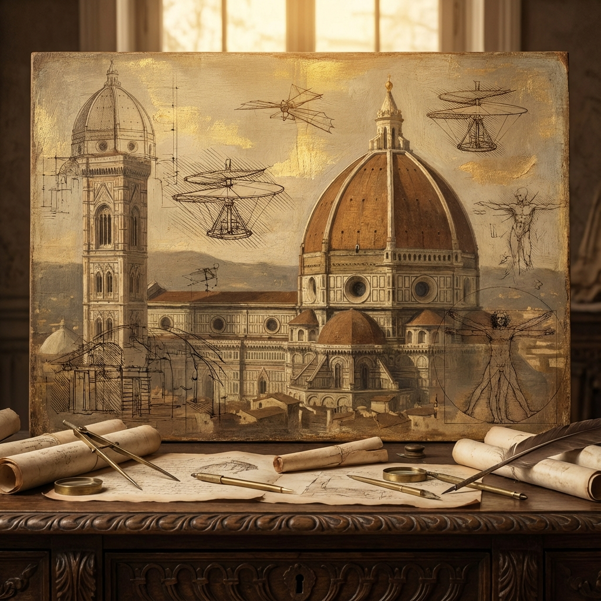

Before the light, there was the Black Death. The plague wiped out a third of Europe, creating a labor shortage that killed Feudalism. With fewer peasants, labor became valuable. The old order of "Land equals Power" gave way to a new one: "Money equals Power."
This shift birthed Capitalism in the city-states of Italy. Venice, Florence, and Genoa became the engines of a new economy, funding an explosion of Art, Science, and rediscovery known as the *Renaissance*.
II. The Spark of Knowledge
1440 AD"He who controls the printing press, controls the mind."
In 1440, a goldsmith named Johannes Gutenberg invented the movable type printing press. It was the "Internet" of its day. Before this, books were handwritten and cost a fortune. Suddenly, knowledge could be mass-produced.
This led directly to the Reformation. Martin Luther could spread his critiques of the Church faster than the Pope could burn them. The monopoly on Truth was broken.
III. The Birth of the Nation
Religion and Politics clashed in the **Thirty Years' War** (1618-1648), the bloodiest conflict Europe had ever seen. It wasn't just Catholics vs. Protestants; it was a war for the soul of the continent.
It ended with the Peace of Westphalia (1648). This Treaty is the most important legal document in geopolitical history. It established the concept of **State Sovereignty**:
- Borders are sacred.
- No external power (Pope or Emperor) can interfere in a nation's domestic affairs.
- The modern "Nation-State" was born.
IV. The Legacy
The Awakening broke the chains of the Middle Ages. It gave us the individual, the scientific method, and the capitalist economy. But it also armed Europe with the technology (Gunpowder, Compass, Caravel) to conquer the world in the Age of Exploration.